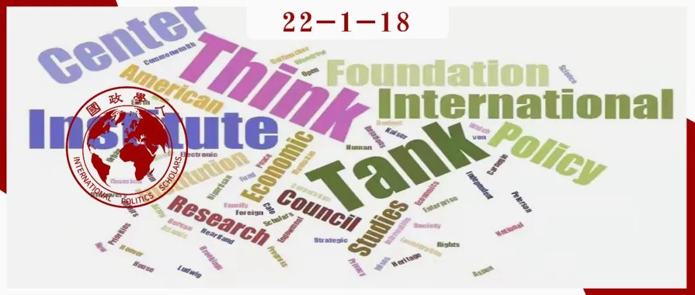
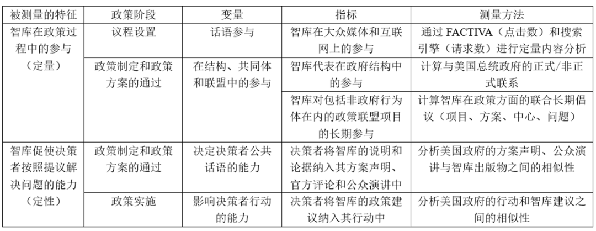
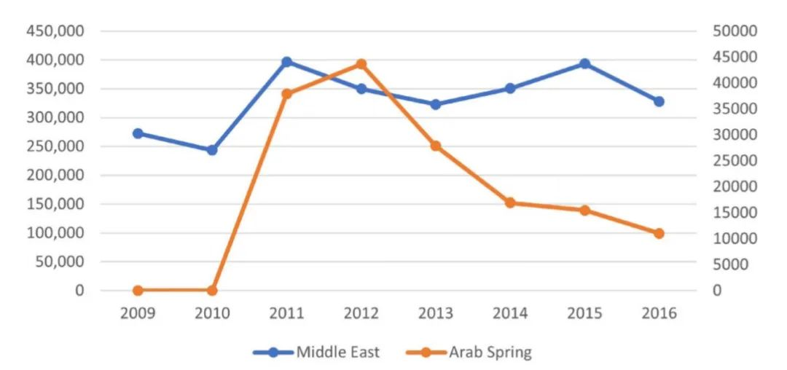
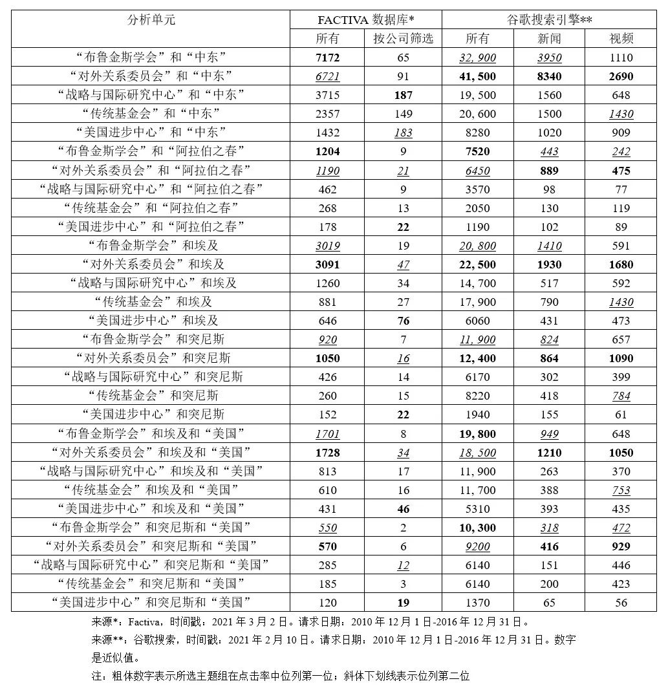
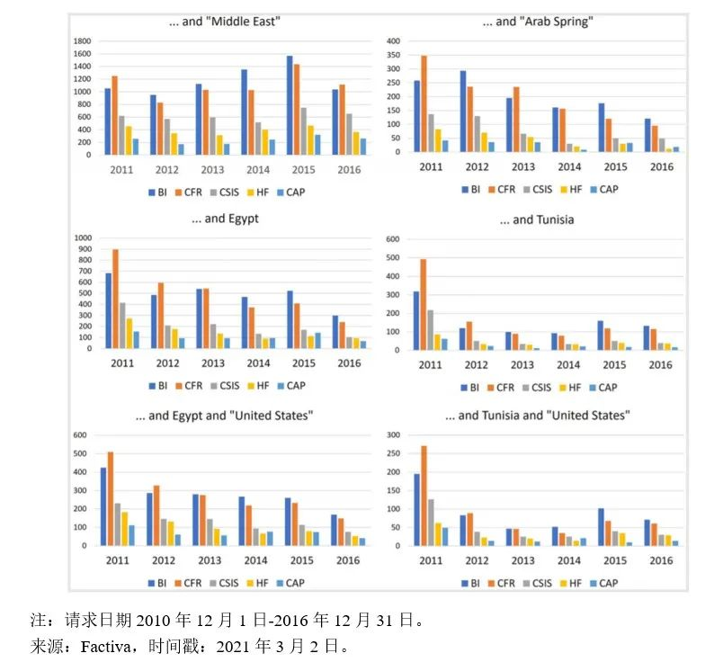
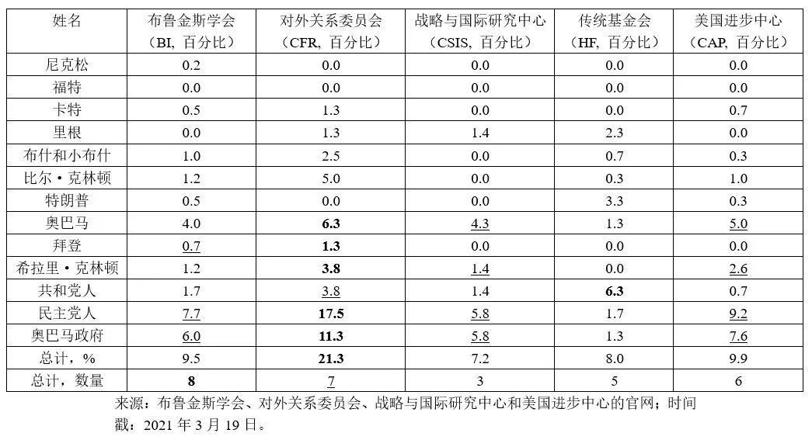
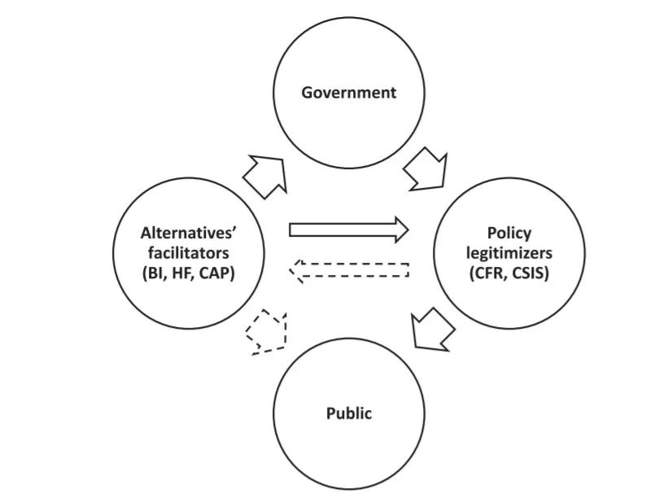

收录于合集 #《国际关系前沿》2022年第1期 23个

作品简介
作者： Dmitry G. Zaytsev，俄罗斯国立高等经济大学（HSE）社会科学学院副教授，应用网络研究国际实验室高级研究员；Valentina V. Kuskova，俄罗斯国立高等经济大学社会科学学院副教授，应用网络研究国际实验室负责人；Alexandra Kononova，获得俄罗斯罗巴切夫斯基大学和国立高等经济大学国际关系与政治学学士、硕士学位。
编译： 陈思涵（国政学人编译员，中山大学国际关系学院）
来源： Dmitry G. Zaytsev, Valentina V. Kuskova and Alexandra Kononova (2021). The Power of Knowledge: How Think Tanks Impact US Foreign Policy. Foreign Policy Analysis , 18(1), 1-22. doi: https://doi.org/10.1093/fpa/orab034
归档： 《国际关系前沿》2022年第1期，总第40期

导读
本文是一篇外交政策研究领域的文章，意在探究智库如何以及为什么能够对外交政策施加影响并触发政策变化。作者围绕智库的两大特征——智库在政策过程中的参与、促使决策者按照智库提议解决问题的能力和四大政策阶段——议程设置、政策制定、政策通过和政策实施来构建理论框架，以阿拉伯之春为案例，综合运用定量与定性方法，探究了布鲁金斯学会、对外关系委员会、战略与国际研究中心、传统基金会、美国进步中心这五家智库对美国外交政策的影响。研究发现，智库往往在政策过程中扮演“替代政策促进者”或“政策合法化者”的角色。本文“以行为体为中心”，重点关注智库如何具体地影响各个政策阶段，具有创新性，发展了智库影响政策过程的类型学，并在一定程度上对传统政策咨询系统理论的不足进行了完善。同时，正如作者所指出的，关于外交政策的议题不仅仅是由智库构建的，关联并不意味着因果关系，本文在分析中主要将时序优先性作为建立因果关系的关键条件，但这可能是不够的，还需要控制其他变量的影响，如通过专家访谈对研究结果进行验证等。此外，由于美国的特殊性，“替代政策促进者”和“政策合法化者”的分类在美国之外的其他国家也许并不适用，本文提出的两种智库类型的代表性仍需要在其他智库研究中得到进一步验证。作者对智库的精英主义/多元主义分类也启示我们，在精英主义- 多元主义的图谱上可能还有一些处于中间位置的、角色更为复杂的智库，这些智库影响决策者和政策过程的具体类型及其在不同国家所具有的特殊性有赖于未来更多的研究。
摘要
**
**
外交政策研究将政府视为政策制定和实施的关键行为体。显然，相关研究对智库等知识经纪人（knowledge brokers）对政策制定的影响关注远远不够。智库如何以及为什么影响美国的外交政策？本文对在接近精英的程度、出身和意识形态等方面存在差异的五家智库进行了分析，揭示了两种非国家行为体影响外交政策的类型。智库要么倡导自己的替代政策建议、解决方案和行动（“替代政策促进者”），要么澄清、证明并合法化政府的政策建议、解决方案和行动（“政策合法化者”）。这两个角色决定了特殊机制和智库的影响方向。在第一种类型中，智库不太倾向于大众媒体，而是更倾向于与非国家行为体的联盟并影响精英的意见。第二种类型则相反：这类智库更倾向于大众媒体，与精英具有更为明显的联系，并注重对公众产生影响。智库的不同出身和战略可能是造成某些观察到的差异的原因。
编译
01
导言
20世纪80年代，智库的数量和影响政策变化的能力显著增加。在美国，“智库繁荣”已成为一种可持续的趋势，且智库对决策的影响在外交事务中尤为显著（Abelson 2006；Wiarda 2010；McGann 2016a）。政策研究中最重要的议题之一是政策变化的机制。理解智库在多个参与者之间的复杂互动中的作用是一项十分重要却又耗时、需要大量知识的工作；加之智库在某一特定过程中的作用往往只能通过回顾（Bertelli and Wenger 2009；Perez and Prasad 2020）过去的事件才能理解，因此，外交政策或其他政策领域的相关研究数量有限。
智库影响评估是以行为体为中心的文献集群（Abelson 2006, 2018；Rich 2004），侧重于研究行为体的权力、影响力等。尽管相关研究最近取得了进展，但仍存在一些缺陷。有观点认为，智库在一个由能够影响决策的其他行为体组成的系统中运作，这样的话智库的影响应该作为该系统的一部分被评估。然而，目前对智库的研究大多是孤立的。
与本文观点一致的是政策咨询系统（policy advisory system，PAS）理论（Halligan 1995；Craft and Howlett 2013）。该理论将关注点转向政府——具有多种政策建议来源的政策咨询系统的中心。在政策咨询系统中，可以根据政策顾问与政府的接近程度对其进行排名，以此解释行为体影响决策的权力。此外，第二代政策咨询系统理论还提出了一个关于在多个行为体互动和多种因素条件下政策顾问及其政策影响的问题（Howlett 2019）。
然而，仍然很少有专门针对智库影响的机制和有效性进行的研究。影响评估文献相当零碎：这些文献侧重于狭义政策问题的影响，并没有比评估智库的“公众可见度”（Rich 2004）和“政策相关性”（Abelson 2018）更深入。为了填补文献中的这一空白，本文建议采用一种新颖、复杂的方法来衡量智库的影响。为此，作者采用以行为体为中心的视角，并认为这种路径最适合评估智库在外交政策决策领域中的影响。此外，根据回顾性评价的建议（Bertelli and Wenger 2009；Perez and Prasad 2020），本文回溯奥巴马政府时期以实现研究目的。
作者提出的影响评估路径扩展了决策方法，建议评估行为体在决策过程中各阶段的影响而非行为体在决策过程中的整体参与度。这种路径利用了智库的两个主要特征：它们在政策过程中的参与和它们促使决策者按照行为体的建议解决问题的能力。然后作者将它们与政策周期模型的四个最关键的阶段联系起来：议程设置、政策制定、政策通过和政策实施（John 1998）。为了对智库的影响力进行回顾性评价，作者将这种路径应用于美国针对阿拉伯之春制定的政策的详尽案例研究中，并重点关注其在突尼斯和埃及的表现。作者评估了五个具有相当不同的背景的美国最出色的知识生产者：布鲁金斯学会（the Brookings Institution, BI）、对外关系委员会（the Council of Foreign Relations, CFR）、战略与国际研究中心（Center for Strategic and International Studies, CSIS）、传统基金会（Heritage Foundations, HF）、美国进步中心（the Center for American Progress, CAP）。
基于案例研究，作者提出了一种新的智库类型学。因此，本研究试图通过回答两个主要问题来弥补智库文献在影响评估方面存在的不足： 智库“如何”和“为什么”有能力对外交政策决策施加影响并触发政策变化。 作者认为智库以对政策周期所有基本阶段的定期和持续参与的方式来施加影响，尝试在理解智库对决策的影响及其触发政策变化能力的机制方面做出贡献，并希望有助于在传统的政策咨询系统内的讨论。
02
研究设计
为评估智库的政策影响，作者从智库的两个重要特征—— 在决策过程中的参与和促使决策者按照行为体的建议解决问题的能力 里各分出两个维度。作者首先评估智库在政策过程中的参与。这种特征体现在议程设置阶段，即智库在有关政策问题的话语中始终可见。作者通过测量智库在大众媒体和网络上的提及度来捕捉这种可见性。当智库参与到与政策领域相关的不同结构、共同体和联盟中时，这种特征也会出现在政策制定和政策方案的通过阶段。作者一方面衡量智库与负责解决政策问题的政府机构之间的正式和非正式联系的数量，另一方面搜索智库为与其他非政府行为体合作而维持的与特定政策相关的项目。接着，作者评估智库说服决策者按照其建议解决问题的能力。这种能力在政策制定和政策方案的通过阶段显现出来，并可以在政策实施阶段看到。在第一阶段，当智库成功将其对政策问题的具体话语解释推入方案声明、官方发表物、评论和决策者的演讲中时，这种能力就会显现出来。这主要依赖于批评性话语分析方法的中心假设（Fairclough 1995）。根据其二元视野，话语建构了社会世界，而话语本身又由社会实践构成（Fairclough 1993）。为了揭示话语的影响，作者研究了政府和智库出版物的文本之间的相似性。在政策实施阶段，作者建议追踪政府在实际行动中实施智库建议的案例以观察智库的政策影响。这需要对智库出版物和美国政府的行动进行全面分析并寻找二者之间的相似性。
表1 研究设计：政策阶段-变量-指标汇编

（注：FACTIVA是道琼斯公司旗下的一个数据库）
03
案例选择
作者选择美国为研究对象是因为其认为这个国家最接近“嵌入式民主”（embedded democracy）的理想类型。 在美国，国家背景因素为智库的政策影响提供了最有利的条件 （Merkel 2004; Buhlmann et al. 2008）。有几种外部嵌入条件与背景因素相关，使得美国智库行业能够顺利发展并被外推到其他国家（McGann 2007），这些条件包括充分的政治自由、具有多个接入点的基于分权的政治系统、政党的数量和实力、发达的公民社会等。美国在智库行业拥有世界领先地位，美国智库总数在2010年为1816家，在2016年为1835家。
本文对智库的选择代表了一个基于2010-2016年的 Global Go To Think Tank Index3 的“专家样本”。但仅仅选择顶级智库并不能将研究结果推广到美国的整个智库行业，突破这一限制并证明案例选择合理性的方法是增加有关智库意识形态的标准以及引入精英主义和多元主义在权力评估上的分歧。 第一，作者关注代表美国智库的所有可能意识形态方向： 中间派、中左派、中右派、右派/保守派、左派/自由派（Rich 2004; McGann 2007）。根据这一附加标准，作者在美国的十大智库中选择了五个进行分析：对外关系委员会-中间派、布鲁金斯学会-中左派、战略与国际研究中心- 中右派、传统基金会-保守派、美国进步中心-自由派。 第二，作者认为所有智库都可以被归类为多元主义或精英主义的类型。 “精英主义智库”主要由精英组成并且是为精英设计的，它动员公众舆论推动统治阶级的决策以服务精英。“多元主义智库”拥有多种影响力渠道，主要针对精英和政策共同体，它们提出自己的而不是由统治阶级设计的建议，目的是影响政府议程和决策。基于这一理论化，作者认为对外关系委员会和战略与国际研究中心主要是精英主义的；传统基金会、美国进步中心和布鲁金斯学会主要是多元主义的。
为对理论主张进行实证，作者选取阿拉伯之春作为外交政策案例进行调查，因为这一事件主导了与中东有关的国际议程近乎四年，其也被视为美国面临的严重安全挑战之一。作者发现，2011-2013年，阿拉伯之春是美国外交政策议程上最重要的问题之一；2013-2016年，这一议题的流行度逐渐下降，但与2010年相比，其仍在世界媒体的议程上。在国家方面，作者选择了突尼斯和埃及，因为它们从政治角度代表了阿拉伯之春的两种完全不同的表现形式。突尼斯被标榜为向民主过渡的“好”例子。埃及的局势则更具争议性，虽与利比亚和叙利亚的“最坏情况”不同，但其也被称为阿拉伯之春的“失败”（Monier 2013）。

图1 FACTIVA中按年份列出的关键词为“中东”和“阿拉伯之春”的出版物数量
04
研究发现：智库在政策过程中的参与
为了考察选定智库在政策过程中的参与，作者从评估其在议程设置阶段的活动开始，所依赖的指标是它们在大众媒体和网络上的参与，而内容分析是一种很适合此类任务的工具（Weare and Lin 2000）。第一步是通过FACTIVA（新闻监控和搜索引擎）数据库测量智库在阿拉伯之春议题相关印刷品中的可见性。第二步是通过一个通用搜索引擎来测量网络可见性。根据搜索话题，搜索词被分为六个单元，每一个智库都是结合“中东”“阿拉伯之春”“埃及”“突尼斯”“埃及和美国”“突尼斯和美国”进行搜索的。作者将2010年12月1日-2016年12月31日作为筛选的请求日期。
本文发现了智库的网络可见性的几个重要趋势。 首先 ，作者认为可以将所观察的智库分为三个具有相似网络可见性的小组。布鲁金斯学会、对外关系委员会是所有六个话题组中具有最高网络可见性的领导者，战略与国际研究中心和传统基金会具有中等网络可见性，美国进步中心在五个选定智库中的网络可见性最低。 其次， 对外关系委员会在制作有关美国对中东和阿拉伯之春的外交政策的新闻和视频方面比其他智库更有成效。这可能暗示其对媒体的参与更加制度化。此外，对视频材料的更高关注可能表明其对公众舆论有更大的影响。 再次， 对于所有智库来说，涉及埃及的议题比涉及突尼斯的议题产生了更多点击率。这很有趣，因为埃及所代表的是比突尼斯更具争议性的转型案例，媒体报道也反映了这一点。同时，印刷媒体可见性显示了与分析网络可见性时同样的三个智库小组。
表2 定量内容分析结果：每个分析请求单元返回的结果数

第三步旨在研究随着阿拉伯之春事件的发展，智库的印刷媒体可见性随着时间推移发生的变化。根据年度出版物总数指标，布鲁金斯学会和对外关系委员会仍是五个智库中的佼佼者，但它们在年度出版物方面具有强度差异：2011年即阿拉伯之春开始时，对外关系委员会在所有六项指标上都处于领先地位。布鲁金斯学会在2013-2014年左右开始领先。这可能是由于这两个智库的专家对事件具有不同优先排序。无论如何，阿拉伯之春事件助推了二者的出版活动似乎是合理的。事实上，对外关系委员会在阿拉伯之春事件开始时更为活跃，当时公众对其关注度最高，这使得对外关系委员会更倾向于影响公众。布鲁金斯学会对这一话题的兴趣越稳定，其在阿拉伯之春结束之际生产相关材料方面的作用越积极，这说明布鲁金斯学会对这一话题具有更持久的兴趣，可能与其首先影响精英的政策有关。

图2 定量内容分析结果（FACTIVA数据库）*
接下来，作者评估了智库在政策制定和政策方案通过阶段的参与。评估参数是智库在与突尼斯和埃及的阿拉伯之春事件相关的结构、共同体和联盟中的参与。第一个指标是智库代表在政府结构中的参与，它考察了智库与奥巴马政府之间存在的正式和非正式关系。作者通过分析发表在智库官网上的智库专家传记衡量这种关系，寻找了提及美国总统（从尼克松到特朗普）以及奥巴马政府成员（尤其是拜登和希拉里·克林顿）的频率。对外关系委员会与美国民主党总统、奥巴马政府以及那些负责外交政策决策的人——奥巴马本人、副总统拜登、国务卿希拉里·克林顿有着最紧密的联系。总的来说，在所有智库中，与民主党总统政府有联系的专家比例最高，为17.5%。至于共和党总统，传统基金会（6.3%）和对外关系委员会（3.8%）的专家联系分列一二位。布鲁金斯学会与奥巴马政府的关系似乎比对外关系委员会更弱，但从有联系的政治家的数量来看（十个中有八个），其处于领先地位。因此，布鲁金斯学会与政策制定者的关系最为多样化，显示出其多元主义倾向。战略与国际研究中心与奥巴马政府的联系水平和布鲁金斯学会相似，美国进步中心与奥巴马政府和民主党总统的联系要少于布鲁金斯学会和战略与国际研究中心，传统基金会的相关联专家比例最低。
第二个指标是智库和包括非政府行为体在内的政策联盟对有关中东和阿拉伯之春的项目的长期参与。所有智库都发起了有关中东的倡议，因此阿拉伯之春是在该地区更广泛的外交政策背景下考虑的。布鲁金斯学会在发起的倡议数量上处于领先地位，并有一个与对外关系委员会一起开展的合作项目，证明了其多元主义智库的地位。它是唯一一个拥有中东政策中心的智库，显示了其更为制度化的长期倡议。对外关系委员会和战略与国际研究中心各有一个中东项目，传统基金会和美国进步中心只有关于该地区的“议题”形式的倡议。
表3 智库专家传记中对美国总统和奥巴马政府成员的提及度

综上所述，本文发现了有关对外关系委员会的精英主义倾向和布鲁金斯学会的多元主义倾向的一些证据。 对外关系委员会对媒体的参与更为制度化，尤其是在创作新闻和视频方面，其试图在某个议题变得紧迫时影响公众。与其他智库相比，对外关系委员会与政治精英建立了正式和非正式的联系，尤其是民主党人和奥巴马政府；其与共和党的联系较少但仍然很重要。但对外关系委员会能够建立政策联盟的长期倡议较少，因而其更倾向于影响公众。因此， 作者认为，对外关系委员会旨在影响普通公众和专家共同体以形成公众舆论，为美国政府的外交政策辩护并使其合法化，而不是阐述新的政策建议。 布鲁金斯学会具有很高的网络和媒体可见性，但无论围绕这一话题的炒作程度如何，它在政策话语中都拥有更持久的参与，这使其成为了新闻制造者。与政治精英温和但多样的联系、政策倡议更为制度化的地位使布鲁金斯学会成为了多元主义智库的“理想类型”。因此， 作者认为，布鲁金斯学会可以影响政治精英的议程，倡导其建议下的政策制定与政策方案的通过。
05
研究发现：智库帮助决策者按照行为体的建议解决问题的能力
智库的另一重要特征是能够让决策者无论在政策制定和政策方案通过阶段还是在政策实施阶段都“听到自己的声音”。作者探究了两个参数：智库决定决策者公众话语的能力和影响其行动的能力。这些信息可以总结为两类：奥巴马政府在其方案声明、发表物、评论和公众演讲中使用的措辞以及智库在其出版物中使用的措辞；奥巴马政府的行动和智库提供的建议。作者重点分析了2011年发布的有关突尼斯和埃及的阿拉伯之春事件的出版物。
一方面，美国政府和智库关于突尼斯和埃及的阿拉伯之春事件的公众话语可以分为三大主题：有关人权保护、改革和该地区民主过渡的主张；有关制定民主过渡路线图和时间表的主张；有关对美国在整个地区促进民主改革、经济发展、和平与安全的新路径（政策或战略）的主张。第一 ， 在有关该地区人权保护、改革和民主过渡的主张方面，政府和智库的措辞有相当数量的匹配。作者发现不仅智库和政府在话语上互相影响，智库之间也互换意见。总体而言，对外关系委员会和战略与国际研究中心的措辞更为谨慎温和，布鲁金斯学会、传统基金会和美国进步中心则更多地批评了奥巴马政府，传统基金会和美国进步中心的话语甚至可以被称为激进。这些差异可以用智库的政治倾向来解释。 第二， 在有关民主过渡路线图和时间表的主张中，作者发现了布鲁金斯学会与政府措辞的完美匹配和时间差，这似乎对奥巴马政府的话语产生了显著影响。对外关系委员会和战略与国际研究中心对奥巴马政府的措辞依旧更为恭维，主要在其为政府声明进行辩护之后。 第三， 在有关美国在整个地区促进民主改革、经济发展、和平与安全的新路径的主张方面，应结合2011年5月18-19日的基础声明和奥巴马总统的演讲进行分析。奥巴马向公众介绍了一个“新战略愿景”，而布鲁金斯学会早在2011年2月就提出过这一愿景。奥巴马还谈到国际社会在确保埃及和该地区的民主改革与经济发展方面的作用，布鲁金斯学会在1月就强调了这一点。在白宫有关中东和北非的话语出现之前，传统基金会和美国进步中心已开始倡导一种新的、长期的、“更清晰和审慎的”“真实”“连贯”“更雄心勃勃”的策略和政策。这种方式使它们比其他智库更具批判性，美国进步中心甚至批评了奥巴马政府的新战略。对外关系委员会和战略与国际研究中心再一次对奥巴马政府的政策展现出温和与支持态度，仅限于对已宣布的解决方案进行一般性措辞或评论。
另一方面，作者对智库促使美国政府按照其建议行动的能力进行了分析，将美国政府的行动和智库的建议分为三组：对中东和北非的经济支持与援助措施；与国际行为体一道启动和发展与中东和北非的伙伴关系；在突尼斯和其他中东、北非国家的投资与民主促进措施。第一， 在经济支持措施方面，布鲁金斯学会再次显现出与奥巴马政府有关具体行动的决策更为匹配的特征，其提出的某些建议具有明显的时间间隔，奥巴马政府会跟进且偶尔使用与布鲁金斯学会建议中相同的措辞。 第二， 奥巴马政府于2011年5月宣布与国际行为体一道启动和发展与中东和北非的伙伴关系，这也是布鲁金斯学会在1月提出的建议。这一建议后来被传统基金会和美国进步中心借用，但仍在奥巴马政府的声明和演讲之前就已出现。对外关系委员会和战略与国际研究中心的关注点依然在评论和发展奥巴马政府已有的陈述上。 第三， 奥巴马总统于2011年10月17日宣布了在突尼斯的投资和民主促进措施。作者发现奥巴马政府的政策行动与传统基金会、美国进步中心和布鲁金斯学会的建议之间有许多匹配之处，这些建议在奥巴马宣布之前就已经被公布了。如果说在布鲁金斯学会的出版物中只能找到未来政策的一些要素，传统基金会和美国进步中心就有了更为系统和广泛的建议，这在后来成为了白宫的官方立场。值得注意的是，奥巴马政府的投资和民主促进措施只针对突尼斯，而智库的建议则针对整个中东和北非地区。
总的来说，作者得出结论：布鲁金斯学会、传统基金会和美国进步中心在话语和具体行动方面都对美国决策者产生了显著影响。 大量案例表明智库的建议可能被美国决策者听取且他们按照智库的提议行动。 一个重要的观察结果是，从对所有智库建议和政府行动的匹配来说，时间间隔是合理的，智库出版物和政府行动之间有一段一个月到半年不等的时间间隔。 在布鲁金斯学会的案例中，作者发现其建议和政府行动有更多更精确的“巧合点”，有些情况下，美国政府几乎步步遵循布鲁金斯学会提出的路线图。对外关系委员会和战略与国际研究中心在奥巴马政府采取行动之后对其进行评论，并为其辩护，努力向公众解释奥巴马政府政策的意义。这两个智库都遵循奥巴马政府的措辞，选择进行解释而非批评。相反，布鲁金斯学会、传统基金会和美国进步中心对奥巴马政府的政策有着“有效”影响，并伴随着温和乃至激进的批评。
06
结论、局限性和进一步的研究方向
本文探讨了由智库在政策过程中扮演的两种不同角色所决定的两种政策影响类型，结论是：布鲁金斯学会、传统基金会和美国进步中心可能充当着“替代政策促进者”的角色，而对外关系委员会和战略与国际研究中心则扮演“政策合法化者”的角色。
布鲁金斯学会代表了一个直接针对决策者的智库，其主要任务是通过推进自己的愿景和替代政策来影响决策者的政策。为此，它与政治精英保持着多样联系，并与其他行为体组成政策联盟，对政府施加更大的政治影响。因此，布鲁金斯学会是一个典型的多元主义智库，就紧迫议题提出广泛话语和政策建议，努力确保其建议被纳入政府政策议程和行动计划，倡导政策变革。传统基金会、美国进步中心与布鲁金斯学会相似，但更具批判性，并共同采取一种更为进取的倡导和游说其建议的策略。对外关系委员会则是一个典型的精英主义智库，其作为利益攸关方（包括公众、专家、智库共同体）的官方政策的合法化者来行动，通过政治精英成员施加影响并与这一阶层保持广泛联系。这就是为什么其话语是通过与政府的密切沟通形成的，然后再进一步向普通公众传播。战略与国际研究中心也和“政策合法化者”类型十分相关。这两个智库的声明都很温和，在评论政府决策时表示支持而非进行批评。
从决策机制的一般理论角度来说，智库主要活跃在议程设置、政策制定和政策通过阶段，因为它们具有明显的话语影响。政策制定和政策通过阶段可细分为两个亚阶段：选择替代政策和合法化。因此， “替代政策促进者”尤其会在有各种选择的阶段影响决策者， 智库具有这种能力，只要它们认真阐述政策问题，为决策者提供新的解决方案，扩大政府考虑的替代政策数量。 “政策合法化者”作为合法化阶段的软实力工具提供者的角色更为明显， 这些智库接受政府制定的政策问题和解决方案，影响公众，协助决策者开展合法化进程，提高政府的发言权。在政策实施阶段，智库既可以提出具体政策行动并控制其实施进程（“替代政策促进者”），也可以为政府宣布的政策行动进行辩护并提供信息支持（“政策合法化者”）。
本文研究结果在一定程度上改善了用于评估智库对决策者的影响的政策咨询系统框架。根据现有理论框架，与美国政府关系密切的对外关系委员会应该对有关阿拉伯之春的决策产生更大影响，布鲁金斯学会的影响力应该较小。然而，本研究表明，尽管联系相对较少，布鲁金斯学会对美国政府施加了真正的、自主的影响，且其与政治精英的关系最为多样化。由此可见， 对于智库的政策影响而言，至关重要的不是数量而是联系的多样性。 由于战略与国际研究中心与精英的联系不那么多样和紧密，其在五个智库中的影响力最小。最后， 本文认为“替代政策促进者”（布鲁金斯学会、传统基金会、美国进步中心）对政府有显著影响，“政策合法化者”（对外关系委员会、战略与国际研究中心）对公众有显著影响。 本文提出的智库与政府关系的新形式可以促使人们重新思考权力和政策影响的理论。
总的来说，本研究为智库如何以及为什么能够施加政策影响提供了启示，从“政策合法化者”与“替代政策促进者”中最具影响力的智库出发，发现了智库影响政策进程的两种机制。 对外关系委员会实施的机制证明了智库在大众媒体（媒体和网络可见性）和政府结构（与精英的显著联系）中的积极参与以及在其他领域相对温和的努力。布鲁金斯学会采用的机制表明智库可以更多地参与包括非政府行为体在内的政策联盟的长期倡议，其对政策过程施加影响的尝试的可能目的是将自己的建议纳入政府的政策与行动中。因此，本文解决了“为什么我们观察到如此不同的政策影响机制”的问题。
然而，本研究具有一些局限性，包括案例选择和泛化的问题、使用的影响评估路径的局限性以及所观察到的话语和建议行动之间的匹配性究竟是纯粹的巧合还是智库在进行真正的权力行使的问题。未来的研究可以关注这两种被称为“合法化者”和“促进者”的智库是否具有其他更微妙的影响力类型，也可以关注能否将这种类型学推广到非美国的案例中，并在政府与智库之外扩大行为体和分析讨论的范围。

图3 智库在美国有关阿拉伯之春的决策中的作用
词汇整理
替代政策促进者 Alternatives ’ facilitators
政策合法化者 Policy legitimizers
影响评估 Impact assessment
以行为体为中心的 Actor-centered
政策咨询系统 Policy advisory system
嵌入式民主 Embedded democracy
多元主义智库 Pluralist think tank
精英主义智库 Elitist think tank
审校 | 姚博闻 董黛
排版 | 牛子悦 邱意雯
文章观点不代表本平台观点，本平台评译分享的文章均出于专业学习之用, 不以任何盈利为目的，内容主要呈现对原文的介绍，原文内容请通过各高校购买的数据库自行下载。

国政学人
支持学术公益与知识传播
微信扫一扫赞赏作者 __赞赏
已喜欢，对作者说句悄悄话
取消 __
发送给作者
发送
最多40字，当前共字
上一页 1/3 下一页
长按二维码向我转账
支持学术公益与知识传播
受苹果公司新规定影响，微信 iOS 版的赞赏功能被关闭，可通过二维码转账支持公众号。